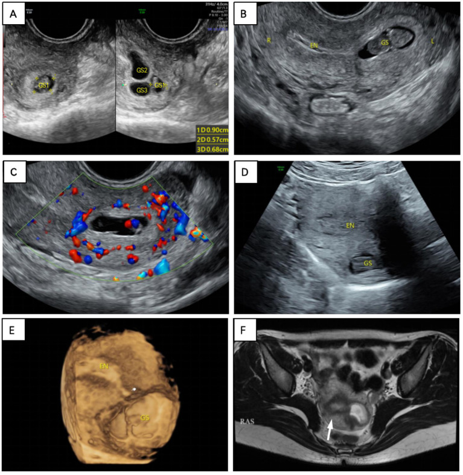
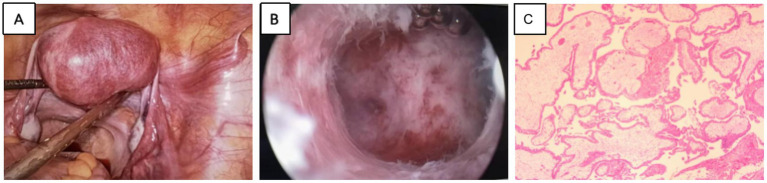

1759 — Thai trong cơ tử cung không sẹo (intramural ectopic pregnancy, IMP) / Intramural ectopic pregnancy without uterine scar
Tags: pattern:thai-ngoai-tu-cung pattern:tui-thai-trong-co pattern:khong-thong-buong-tu-cung pattern:do-ngam-mach pattern:chay-mau vung:tu-cung vung:tieu-khung score:beta-hCG protocol:SA-dau-do protocol:MRI-tieu-khung protocol:noi-soi-tieu-khung
Mức chắc chắn (certainty): tổng hợp y văn (literature synthesis) — 1 tổng quan dữ liệu bệnh nhân cá thể 82 ca/27 quốc gia (PMC10805919), 1 loạt 2 ca HIMP có ảnh siêu âm 3D + MRI (PMC12521109), 1 ca tồn dư nguyên bào nuôi sau mổ (PMC11647785) và 1 ca phải cắt tử cung (PMC11007569). Bằng chứng là ca báo cáo; câu nào là suy luận được ghi [suy luận].
1. Tổng quan bệnh học – cơ chế hình ảnh
- Định nghĩa: thai trong cơ tử cung (intramural pregnancy, IMP) là túi thai (gestational sac, GS) làm tổ trong lớp cơ tử cung, được cơ bao quanh một phần hoặc hoàn toàn, tách khỏi buồng tử cung và vòi trứng (PMC10805919). Đây là thể hiếm nhất của thai ngoài tử cung, chiếm ~1% các thai ngoài tử cung; thể không sẹo (không tiền sử mổ tử cung) là nhóm còn hiếm hơn và không được lẫn với thai trên sẹo bóc u xơ (bài 1727).
- Vì sao phôi vào được lớp cơ — 3 giả thuyết chính (PMC10805919):
- Đường hầm giả (false tract) giữa nội mạc và cơ, tạo ra do can thiệp buồng tử cung (nạo, hút, đặt dụng cụ) — yếu tố nguy cơ hay gặp nhất.
- IVF – chuyển phôi (embryo transfer) đưa phôi nhầm vào lớp cơ qua đường hầm giả hoặc do đầu catheter làm tổn thương nội mạc.
- Adenomyosis làm cơ tử cung "nhận" phôi tốt hơn (tăng tính thụ nhận của cơ).
- Ngoài ra: tăng hoạt tính ly giải của nguyên bào nuôi (syncytiotrophoblast) + decidual hóa khiếm khuyết → phôi xâm nhập cơ; di chuyển ngoài (external migration) sau khi qua vòi.
- Dịch tễ — 82 ca (PMC10805919):
- Tuổi mẹ 32,07 ± 5,67 (19–44); tuổi thai 9,27 ± 5,68 tuần (4–37 tuần).
- Yếu tố nguy cơ: nạo/hút buồng tử cung 36,58% (30 ca) · cắt vòi trứng 12,19% (10) · IVF–chuyển phôi 12,19% (10) · mổ lấy thai 10,97% (9) · bóc u xơ 9,75% · adenomyosis 4,88%; 2 ca không có yếu tố nguy cơ nào.
- 21,69% (18 ca) không có triệu chứng — chỉ phát hiện khi siêu âm.
- Vỡ 14,63% (12 ca), tuổi thai lúc vỡ 5 tuần 6 ngày – 26 tuần 0 ngày (trung bình 15,11 ± 6,18 tuần); tử vong ~2,5%.
- Chẩn đoán xác định: mô bệnh học 26,83%, MRI 17,07%, mổ mở 14,63%, nội soi ổ bụng 12,19%.
- TẠI SAO hình ảnh trông như vậy (vật lý + mô bệnh):
- Túi thai/dịch ối giàu nước → T2 rất cao, T1 thấp/đồng tín hiệu; cơ tử cung T2 trung gian; vùng chuyển tiếp (junctional zone, JZ) là dải T2 thấp ngay dưới nội mạc — nên MRI T2 là cách tốt nhất trả lời "túi thai nằm ngoài JZ hay trong buồng tử cung".
- Nguyên bào nuôi là mô mạch → ngấm thuốc sau gadolinium, tăng sinh mạch dữ dội trên Doppler ("ring of fire") và trên CEUS (bơm cản quang siêu âm): ngấm sớm ~9 giây, kéo dài 11–28 giây, thải muộn hơn cơ; ranh giới túi thai–nội mạc rõ ở pha muộn ~29 giây (dữ liệu 1 ca — PMC10805919).
- Lớp cơ/thanh mạc mỏng ≤ 3 mm là dấu hiệu nguy cơ vỡ vì thành còn lại ít; u mạch máu dưới thanh mạc rất mỏng, dễ vỡ khi túi thai lớn lên.
- Túi thai trong cơ không có "cổ" thông với buồng tử cung (khác thai góc/cornual có interstitial line) — nhưng có thể có đường hầm nhỏ (sinus tract) nối với nội mạc, thấy trên siêu âm 2D/3D độ phân giải cao hoặc MRI.
- Phân loại theo ESHRE (dẫn trong PMC12521109): thể hoàn toàn (complete) — túi thai hoàn toàn trong cơ, không thông buồng tử cung; thể không hoàn toàn (incomplete) — một phần túi thai trong cơ, còn thông với nội mạc. Thể không hoàn toàn dễ bị bỏ sót hơn vì vẫn thấy "túi thai trong buồng".
- Ca nguyên văn dùng cho quiz (PMC12521109, ca 1): nữ 30 tuổi, G3P0, vô kinh 2 tháng, β-hCG > 5.000 mIU/mL; siêu âm đầu dò âm đạo (TVUS) thấy 3 ổ giảm âm ở đáy tử cung, ổ lớn có phôi 3,9 mm; hút buồng tử cung → mô học có gai nhau; 1 tuần sau β-hCG tăng lên 14.676 mIU/mL, siêu âm lặp: túi thai ở đáy, có tim thai, mất liên tục với nội mạc; 3D thấy đáy tử cung lồi ra ngoài; MRI T2 xác nhận túi thai ngoài nội mạc, trong cơ; mổ nội soi + nội soi buồng tử cung lấy túi thai; ngày 4 sau mổ β-hCG 1.672, về bình thường sau 3 tuần.
2. Mẫu hình + chẩn đoán phân biệt theo VỊ TRÍ (Gamut)
Mẫu hình: túi thai/khối hỗn hợp trong cơ tử cung, bờ được cơ bao quanh, không thông với buồng tử cung (thể hoàn toàn) hoặc thông một phần (thể không hoàn toàn); ± vòng mạch nuôi, ± lồi thanh mạc, ± dịch ổ bụng.
- Theo vị trí trong tử cung:
- Đáy tử cung (fundus): hay gặp; dễ nhầm thai trong buồng bình thường khi túi thai nằm sát nội mạc; 3D giúp thấy đáy lồi.
- Sừng/góc tử cung (cornual): dễ nhầm thai góc/interstitial — khác biệt ở vị trí so với vòi trứng và lớp cơ bao quanh.
- Thân tử cung (trước/sau): hay gặp ở người có nạo/hút trước đó; dễ nhầm u xơ thoái triển.
- Gần sẹo cũ (nhưng không có tiền sử mổ): có ca IMP trên sẹo do dụng cụ tử cung (IUD) xuyên thủng — vẫn là "không sẹo mổ" nhưng có đường hầm.
- Cổ tử cung: không thuộc IMP — đó là thai cổ tử cung; phân biệt bằng giải phẫu.
- Theo bệnh cảnh "túi thai ngoài buồng tử cung":
- Thai góc/sừng (interstitial/cornual): lệch một bên, lớp cơ bao quanh < 5 mm, interstitial line sign.
- Thai trên sẹo mổ lấy thai (CSP): vị trí đoạn dưới, tiền sử mổ lấy thai, RMT ≤ 3 mm, sliding sign âm (bài 552).
- Thai trên sẹo bóc u xơ (MSP): tiền sử bóc u xơ, sẹo ở thân/đáy/sừng, có thể thông buồng tử cung (bài 1727).
- Thai cổ tử cung: túi thai trong kênh cổ, eo tử cung phình (hourglass), không có cơ bao quanh.
- Thai trong buồng tử cung lệch bên (angular): vẫn trong nội mạc, cơ bao quanh dày; khác IMP.
- Bệnh nguyên bào nuôi thai nghén (GTN): hCG rất cao, không có túi thai có phôi, hình "bão tuyết"/khối tăng sinh mạch; có thể choriocarcinoma trong cơ (đã báo cáo).
- U xơ thoái triển (degenerating fibroid): khối trong cơ, không vòng mạch, hCG âm/thấp; có thể T1 cao do xuất huyết.
- Sót sản phẩm thụ thai (RPOC): khối trong buồng tử cung, liên tục với nội mạc, hCG thấp và giảm.
- Adenomyosis khu trú: ổ dịch nhỏ trong cơ, không có phôi/tim thai, hCG âm.
3. Bảng so sánh phân biệt (ma trận đối chiếu)
| Thực thể (entity) | Hình ảnh điển hình (US/MRI) | Chốt vào (rule-in) | Chốt loại (rule-out) | Gợi ý xác nhận |
|---|---|---|---|---|
| IMP thể hoàn toàn | Túi thai hoàn toàn trong cơ, không thấy đường thông; cơ bao quanh; ± vòng mạch | Túi thai trong cơ + buồng tử cung rỗng + không thấy vòi trứng chứa thai | Có đường thông rộng với nội mạc → thể không hoàn toàn/thai trong buồng | MRI T2 sagittal + 3D TVUS; mô bệnh sau mổ |
| IMP thể không hoàn toàn | Túi thai một phần trong cơ, thông với buồng tử cung qua đường hầm | Đường hầm nội mạc–cơ + túi thai nằm ngoài nội mạc | Túi thai hoàn toàn trong nội mạc → thai bình thường | 3D TVUS (mặt cắt qua JZ); MRI |
| Thai góc/sừng (interstitial) | Túi thai lệch bên ở sừng, cơ bao quanh < 5 mm, interstitial line | Interstitial line sign + < 5 mm cơ quanh + lệch ngoài buồng | Cơ bao quanh dày, túi thai trong buồng → không phải góc | MRI; nội soi; β-hCG |
| Thai sẹo mổ lấy thai (CSP) | Túi thai đoạn dưới, RMT ≤ 3 mm, sliding sign âm | Tiền sử mổ lấy thai + vị trí đoạn dưới + RMT ≤ 3 mm | Sẹo ở thân/đáy + tiền sử bóc u xơ → MSP; không sẹo → IMP | TVUS + Doppler; MRI nếu mơ hồ (bài 552) |
| Thai cổ tử cung | Túi thai trong kênh cổ, eo phình, mạch nuôi từ ĐM tử cung | Túi thai trong kênh cổ + không có cơ bao quanh | Túi thai trong thân/sừng → không phải cổ | TVUS; MRI |
| GTN / choriocarcinoma trong cơ | Khối tăng sinh mạch, không có túi thai/phôi, hCG rất cao | hCG rất cao + không phôi + khối mạch máu | Có phôi/tim thai, hCG tăng theo thai → IMP | hCG chuỗi; MRI; mô bệnh |
| U xơ thoái triển | Khối trong cơ, không vòng mạch, T1 có thể cao | Không phôi, không vòng mạch, hCG âm/thấp | Có phôi/tim thai + vòng mạch + hCG tăng → thai | Siêu âm lặp; MRI |
| RPOC | Khối echo trong buồng tử cung, liên tục nội mạc | Khối trong buồng + hCG thấp/giảm sau sẩy | Khối trong cơ, tách nội mạc → IMP | TVUS; hCG; nội soi buồng tử cung |

Sáu panel của ca 1: (A) TVUS ban đầu — 3 ổ giảm âm ở đáy, ổ lớn có phôi 3,9 mm; (B) sau hút 1 tuần — túi thai ở đáy, mất liên tục với nội mạc; (C) CDFI — mạch dữ dội giữa túi thai và nội mạc; (D) siêu âm bụng; (E) 3D — đáy tử cung lồi ra ngoài; (F) MRI T2 — túi thai ngoài nội mạc, trong cơ. Nguồn: Zhang J et al., Front Med 2025 (PMC12521109), Fig. 1, CC BY 4.0.Ba câu hỏi trước khi can thiệp
- Túi thai có thật trong buồng tử cung không? (loại thai trong buồng, RPOC, GTN; kiểm tra túi thai thứ hai — thai đôi khác buồng có thể đồng thời).
- Túi thai nằm trong cơ hay ngoài nội mạc? (thể hoàn toàn/không hoàn toàn; JZ trên MRI và 3D TVUS là chốt).
- Có vỡ/chảy máu ổ bụng không? (đau cấp, dịch ổ bụng, tụt huyết áp → mổ cấp, không chờ hCG).
4. Protocol chụp + phân độ/điểm chuẩn hóa
- Siêu âm đầu dò âm đạo (TVUS) — bước 1: khảo sát toàn bộ tử cung theo mặt cắt dọc/ngang từ cổ đến đáy, không chỉ mặt cắt thường quy. Ghi nhận: vị trí túi thai so với nội mạc, độ dày cơ/thanh mạc còn lại (mm), vòng mạch, phôi/tim thai, đường hầm nối với buồng tử cung. Ở 82 ca, siêu âm được làm 97,56%, nhưng chỉ 29/66 ca có mô tả là chẩn đoán/gợi ý đúng (PMC10805919).
- Siêu âm 3D: dựng mặt phẳng qua vùng chuyển tiếp (JZ) và render bề mặt để thấy đáy/sừng lồi, mất liên tục nội mạc–cơ; giúp phân biệt IMP với thai góc và thể không hoàn toàn. Dùng ở 4,88% ca trong tổng quan (PMC10805919).
- CEUS (nếu có): ngấm sớm ~9 giây, kéo dài 11–28 giây, thải muộn; ranh giới túi thai–nội mạc rõ ở pha muộn ~29 giây — dữ liệu 1 ca, chưa đủ để thành tiêu chuẩn.
- MRI tiểu khung — khi siêu âm mơ hồ hoặc trước mổ:
- T2 sagittal + coronal (vị trí túi thai so với JZ, buồng tử cung, vòi trứng), T1 (máu), T1 fat-sat sau gadolinium (ngấm của nguyên bào nuôi), DWI nếu cần phân biệt khối đặc.
- Trên MRI: túi thai T2 cao, T1 thấp/đồng; có thể thấy mạch xoắn quanh túi thai (cấu trúc ống tín hiệu cao/tín hiệu trống); đường hầm nối buồng tử cung–túi thai ở 2 ca (PMC10805919).
- MRI được dùng ở 21,95% ca; được đề xuất là "chuẩn vàng" chẩn đoán IMP [ý kiến tác giả, chưa có nghiên cứu so sánh].
- Xét nghiệm: β-hCG định lượng + lặp 48 giờ; không có ngưỡng hCG nào chứng minh để chọn methotrexate (MTX) trong IMP. hCG có thể âm ở 2 ca IMP đã chết và thoái triển (PMC10805919) — hCG âm không loại trừ hoàn toàn.
- Chẩn đoán xác định: mô bệnh học sau mổ là chuẩn: gai nhau (chorionic villi) được bao quanh bởi cơ trơn tử cung, thâm nhiễm nguyên bào nuôi, không thấy vòi trứng (PMC10805919).
- Phân độ: không có hệ phân độ/RADS được kiểm chứng cho IMP; dùng ESHRE complete/incomplete (mô tả, chưa chứng minh tiên lượng) + độ dày cơ còn lại và vị trí để quyết định [suy luận].
- Điều trị — số liệu 82 ca:
- Phẫu thuật là chính: nội soi ổ bụng 25,61% (21) · mổ mở 23,17% (19) — cắt khối + khâu phục hồi cơ; cắt tử cung 13,41% (11, trong đó 1 ca choriocarcinoma).
- Nội khoa 23,17% (19): MTX toàn thân/tại chỗ hoặc KCl tại chỗ; thất bại 31,58% (6/19) phải mổ — tỉ lệ thành công ~68,42%; tuổi thai càng lớn, tỉ lệ thành công càng giảm.
- Theo dõi đơn thuần (conservative) 3,65% (3 ca) — chỉ chọn khi ổn định, u nhỏ, hCG giảm, có theo dõi sát.
- Nút mạch tử cung (UAE) trước mổ đã được báo cáo để giảm chảy máu (1 ca); hút buồng tử cung dưới hướng dẫn nội soi ở thể không hoàn toàn (1 ca).
- Sau mổ: theo dõi β-hCG hằng tuần đến âm tính; siêu âm kiểm tra; thai kỳ sau siêu âm ở 5–6 tuần để chẩn đoán sớm tái phát (khuyến cáo của tổng quan).
- Nguy cơ tồn dư nguyên bào nuôi: đã có ca hCG tăng lại sau mổ, cần MTX tại chỗ và theo dõi mạch máu tại chỗ (PMC11647785) — không dừng theo dõi khi hCG chưa âm.
flowchart TD
A[Thai ngoài buồng tử cung + không tiền sử mổ tử cung] --> B{TVUS: túi thai trong cơ, tách nội mạc?}
B -->|Không| C[Xét thai góc, CSP, cổ tử cung, RPOC, GTN]
B -->|Có| D[3D TVUS + Doppler ± MRI T2/gadolinium]
D --> E{Đau cấp, dịch ổ bụng, tụt huyết áp?}
E -->|Có| F[Mổ cấp: cắt khối + khâu cơ hoặc cắt tử cung]
E -->|Không| G{Thai còn sống và cơ còn đủ?}
G -->|Có, mong con| H[Nội soi cắt khối + khâu cơ ± MTX tại chỗ]
G -->|Không, u nhỏ, hCG giảm| I[Theo dõi sát: hCG 48 giờ, siêu âm 1 tuần]
G -->|Không còn nhu cầu sinh sản/lan rộng| J[Cắt tử cung nếu không bảo tồn được]
H --> K[hCG hằng tuần đến âm tính + tư vấn thai kỳ sau]
I --> K
F --> K
J --> K
5. Biến thể bình thường và cạm bẫy
- Siêu âm 2D dễ sai: 13/66 ca (19,7%) bị chẩn đoán nhầm là thai góc/sừng/interstitial trên siêu âm đầu; thể không hoàn toàn còn dễ bị gọi là "thai trong buồng bình thường" (PMC10805919).
- Hút buồng tử cung không chữa được IMP: ca 1 vẫn còn túi thai sống sau hút, hCG tăng từ > 5.000 lên 14.676; nạo mù còn có nguy cơ thủng tử cung/chảy máu [suy luận cơ học, phù hợp khuyến cáo phẫu thuật].
- Thai đôi khác buồng (heterotopic): có thể có một thai trong buồng bình thường + một IMP; sau hút thấy hCG không giảm/tăng lại phải nghĩ đến túi thai thứ hai — đây chính là bẫy của ca 1 và của loạt 2 ca HIMP (PMC12521109).
- hCG âm/thấp không loại trừ: đã có 2 ca IMP được chứng minh mô học với β-hCG âm (thai chết, không tiêu hết) (PMC10805919).
- Nhầm u xơ thoái triển/adenomyosis: khối trong cơ + ổ dịch nhỏ, không phôi, không vòng mạch; hCG âm và theo dõi siêu âm giúp phân biệt; đừng chọc/dẫn lưu khi chưa loại trừ thai.
- Nhầm GTN/choriocarcinoma: hCG rất cao + khối mạch máu không có túi thai/phôi; cần mô bệnh — đã có ca choriocarcinoma trong cơ được chẩn đoán sau cắt tử cung.
- Vỡ thường sau 12 tuần: vỡ hay gặp ở thai > 12 tuần (trung bình 15,1 tuần), nhưng đã có ca vỡ từ 5 tuần 6 ngày — không được trấn an bằng tuổi thai nhỏ.
- "Không sẹo" không có nghĩa "không đường hầm": IMP có thể xảy ra sau IUD xuyên thủng hoặc nạo trước đó — hỏi kỹ mọi can thiệp tử cung, không chỉ mổ bóc u xơ/mổ lấy thai.
- Tồn dư sau mổ: hCG có thể tăng lại sau cắt khối do nguyên bào nuôi còn sót → theo dõi hCG và MTX tại chỗ nếu cần (PMC11647785); đừng kết thúc theo dõi quá sớm.
- Phân biệt "IMP một phần" với placenta percreta: tổng quan nêu tranh luận — mô tả "sản phẩm thai bám một phần trong cơ sau sinh" giống placenta percreta hơn là IMP; cần mô bệnh và bối cảnh (PMC10805919).
6. Tự lượng giá — Blind Quiz
Ca 1 — Nữ 30 tuổi, G3P0, vô kinh 2 tháng, β-hCG > 5.000 mIU/mL. Siêu âm đầu tiên thấy 3 ổ giảm âm ở đáy tử cung. Ảnh dưới đây là diễn tiến 1 tuần sau hút buồng tử cung.
- Hỏi: vì sao β-hCG lại tăng sau hút? Panel nào chứng minh túi thai ngoài nội mạc? Ba chẩn đoán phân biệt và bước xác nhận?
Bấm để hiện đáp án (findings + chẩn đoán)
- Findings: (A) 3 ổ giảm âm ở đáy, ổ lớn có phôi 3,9 mm; (B) sau hút 1 tuần — túi thai ở đáy, mất liên tục với nội mạc; (C) Doppler — mạch dữ dội giữa túi thai và nội mạc; (E) 3D — đáy tử cung lồi ra ngoài; (F) MRI T2 — túi thai ngoài nội mạc, trong cơ, JZ còn nguyên.
- Chẩn đoán: thai trong cơ tử cung (IMP), thể hoàn toàn; hCG > 5.000 → 14.676 vì túi thai trong cơ không được hút ra và tiếp tục phát triển (có tim thai).
- Phân biệt: thai góc/interstitial (interstitial line, cơ quanh < 5 mm), thai sẹo mổ lấy thai (RMT ≤ 3 mm, tiền sử mổ), GTN (hCG rất cao, không phôi).
- Xử trí: nội soi ổ bụng + nội soi buồng tử cung cắt túi thai + khâu cơ; ngày 4 hCG 1.672, về bình thường sau 3 tuần.
- Nguồn ảnh: Zhang J et al., Front Med 2025 (PMC12521109), Fig. 1, CC BY 4.0.
Ca 2 — Cùng bệnh nhân, hình ảnh trong mổ và mô bệnh.

- Hỏi: vì sao phải nội soi ổ bụng + nội soi buồng tử cung thay vì chỉ hút? Mô bệnh phải thấy gì để xác nhận?
Bấm để hiện đáp án (findings + chẩn đoán)
- Findings: (A) nội soi — khối lồi ra ở cơ tử cung, mạch máu dưới thanh mạc; (B) nội soi buồng tử cung — túi thai nằm trong cơ, lấy được sau khi rạch cơ dưới quan sát nội soi; (C) mô bệnh — gai nhau trong mô cơ.
- Vì sao không chỉ hút: túi thai không thông với buồng tử cung; hút chỉ lấy được nội mạc, không tiếp cận túi thai, còn làm tăng nguy cơ thủng/chảy máu.
- Mô bệnh xác nhận: gai nhau (chorionic villi) được bao quanh bởi cơ trơn tử cung, thâm nhiễm nguyên bào nuôi, không thấy vòi trứng — tiêu chuẩn của IMP (PMC10805919).
- Nguồn ảnh: Zhang J et al., Front Med 2025 (PMC12521109), Fig. 2, CC BY 4.0.
Ca 3 — Nữ 41 tuổi, tiền sử 2 lần hút thai trong 2 năm, sẩy thai nội khoa 2 tháng trước; β-hCG 67.055 → 2.469 → 3.069 mIU/mL.
- Hỏi: hCG tăng lại sau khi đã "sạch" gợi ý gì? Cần làm gì trước khi kết luận GTN?
Bấm để hiện đáp án (findings + chẩn đoán)
- Gợi ý: còn mô nguyên bào nuôi hoạt động — có thể IMP bị bỏ sót, thai đôi khác buồng, hoặc GTN; không được mặc định là GTN và bắt đầu hóa trị.
- Bước tiếp theo: siêu âm lặp + 3D TVUS/CDFI, MRI để tìm túi thai trong cơ; hCG lặp 48 giờ; nếu còn khối trong cơ → nội soi buồng tử cung/ổ bụng lấy mô; mô bệnh là chốt (gai nhau trong cơ).
- Điểm học: sau mọi can thiệp buồng tử cung, hCG không giảm như kỳ vọng phải chụp lại toàn bộ tử cung, không chỉ đọc "buồng tử cung trống".
- Nguồn ca: Zhang J et al., Front Med 2025 (PMC12521109), ca 2, CC BY 4.0 (không dùng ảnh riêng cho ca này).
Bài liên quan chéo
- 552 – Chửa ở sẹo mổ lấy thai & chửa góc: RMT ≤ 3 mm, sliding sign, interstitial line
- 1727 – Thai trên sẹo bóc u xơ tử cung: phân 3 thể, vỡ 11,4%, PAS 29,5%
- 1717 – Vỡ tử cung trên sẹo mổ lấy thai: 22,7% không đau
- 520 – U xơ tử cung FIGO & adenomyosis nội mạc
- 532 – U xơ trong thai kỳ & thoái triển đỏ
- 1624 – Polyp nhau/khối trong buồng tử cung sau sinh
- 1750 – UTUC ở bệnh nhân thận ghép
Không dùng để chẩn đoán độc lập khi chưa có người hướng dẫn.